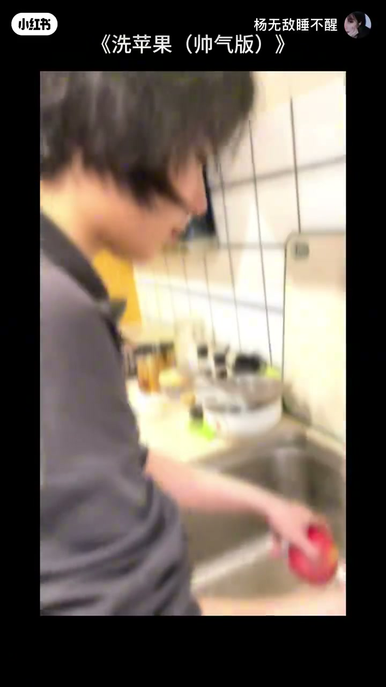
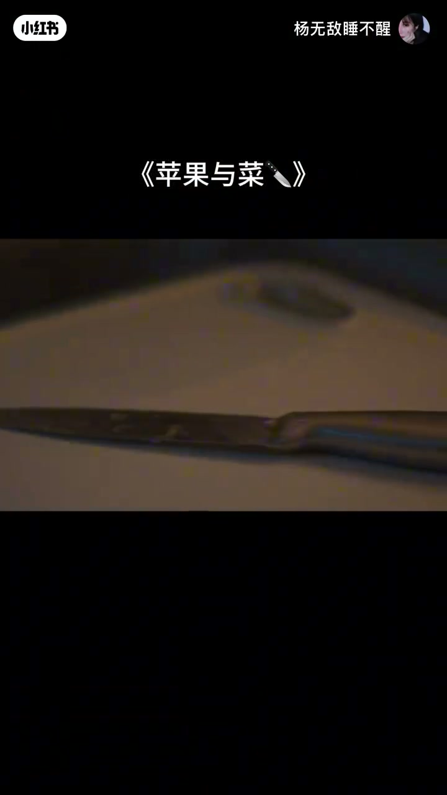
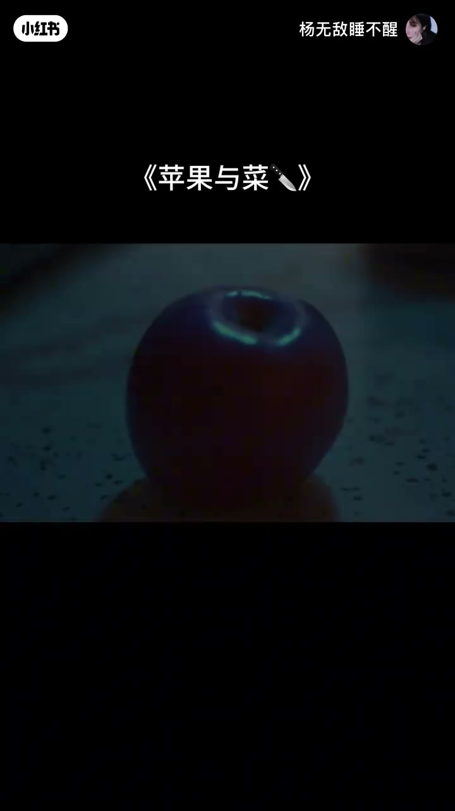
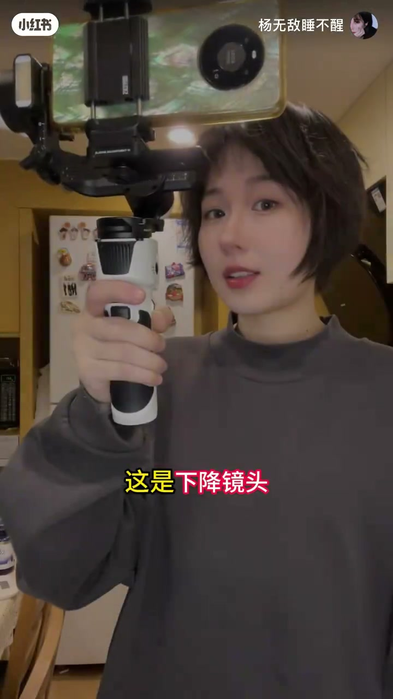
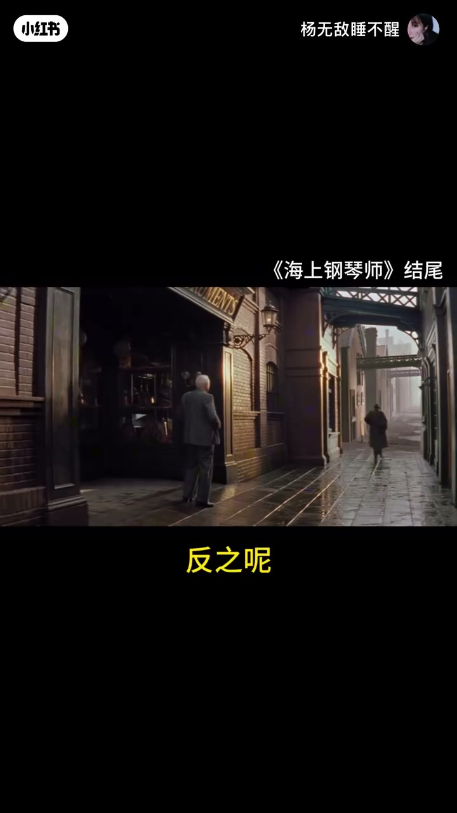
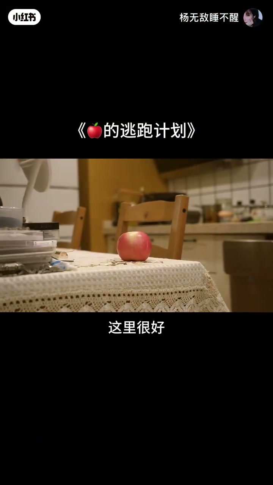
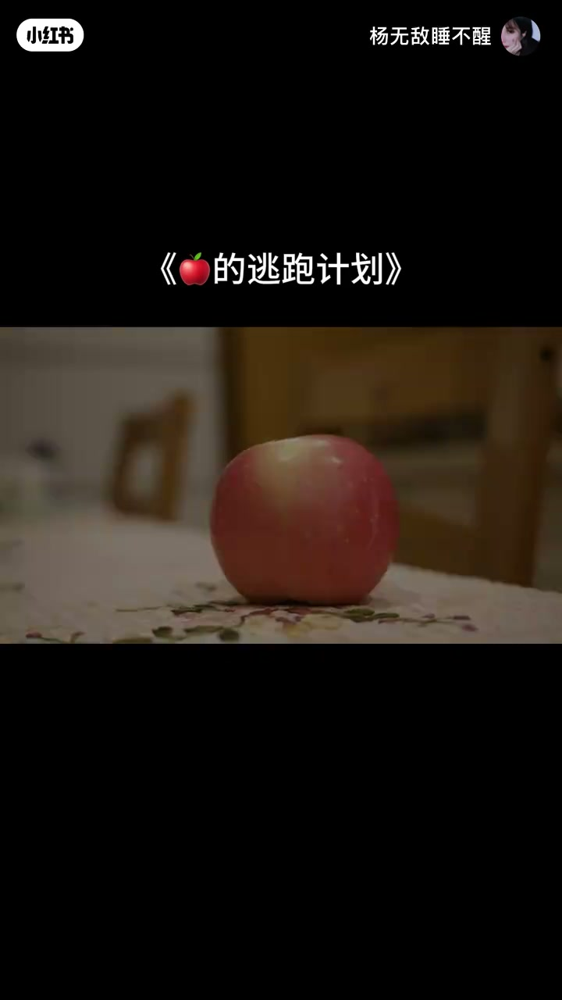
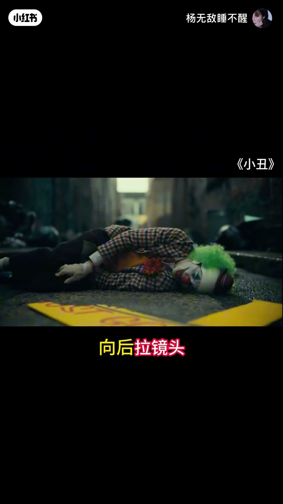

内容要点
一支 1 分 07 秒的运镜科普：用一个苹果的冒险故事，把镜头语言讲得既有画面又易记。摇镜头渲染氛围、下降镜头开启故事、上升镜头收束结尾、推镜头放大情绪、拉镜头转向环境——每种运镜都有明确的叙事功能。
知识结构
以「我练运镜呢」开场，点出运镜除了耍帅还能讲故事。
同一个苹果用不同运镜能拍出不同感觉。摇镜头可以渲染激烈的氛围，同时交代人物关系。
下降镜头画面从全局到主角，是电影里常用的开场方式；上升镜头则适合作为结尾。
明亮温馨的厨房是故事舞台——但都是假象，苹果决定离开。
推镜头在交代环境的同时放大人物情绪；向后拉镜头则情绪淡化、环境成为重点。
运镜不是炫技，而是叙事工具：摇镜头交代关系、下降镜头开场、上升镜头结尾、推镜头放大情绪、拉镜头转向环境。学会运镜，视频就能讲出不同感觉。
00:00-00:10运镜还能讲故事
视频从一个疑问开场：「你干嘛呢？」「我练运镜呢。」随后立刻给出结论：「其实除了耍帅，运镜还能讲故事。」这句话奠定了全片的基调：运镜是服务于叙事的镜头语言，而不是单纯的炫技。

00:10-00:27摇镜头：渲染氛围，交代关系
「你看啊，这颗苹果，用不同的运镜，能拍出不同的感觉。」主讲人举起苹果，用一段追跑戏演示。苹果要逃，镜头紧随其后。
「这是一颗苹果的宿命。」画风一转，进入正式的镜头讲解。第一种是摇镜头：「可以渲染激烈的氛围，同时交代人物关系。」在追跑中，镜头摇动带出的画面位置变化，让观众自然理解了苹果与「追捕者」的空间关系。


00:27-00:42升降镜头：开场与结尾
镜头落在一个「普通的厨房」，一段苹果的冒险故事即将上演。「这是下降镜头，画面从全局到主角，是电影里常用的开场方式。」全景先交代环境，镜头下降让主角苹果进入画面中心。
「反之呢，上升镜头则适合作为结尾。」主角（苹果）说完自己的宣言，镜头上升、画面拉开，为故事收束。听者恍然大悟：「有点意思，确实感觉不一样。」


00:42-00:51环境叙事：明亮温馨是假象
「这里很好，明亮又温馨。」但旁白随即揭穿：「但那都是假象，我必须离开这。」这段用环境本身推动叙事——明亮的厨房是苹果生活的舒适区，也暗示着它必须逃离的现状。镜头语言在此刻完成了「环境即情绪」的表达。

00:51-01:07推拉镜头：情绪与环境的博弈
「推镜头，在交代环境的同时，放大人物情绪。」镜头缓缓推进，观众被拉近到苹果的决心之中。「同理向后拉镜头，情绪会淡化，环境变成重点。」镜头一退，视角重新回到厨房这个空间。
「原来这么多说法，以前我还真没注意过。」听者感慨。结尾点题：「总之你看，一颗苹果都能拍出不同感觉。学会运镜，你的视频也可以。」


完整转录（45段）
以下文本由 Whisper medium 模型自动转录，可能存在少量识别误差，已尽可能修正。
你干嘛呢
我练运镜（保留）呢
你看
其实除了耍帅
运镜（保留）还能讲故事
你看啊
这颗苹果
用不同的运镜（保留）
能拍出不同的感觉
嘿 你要干嘛
别怪我
这是一颗苹果的宿命
你等等
我还有个请求
这是摇镜头
可以渲染激烈的氛围
同时交代人物关系
这是一个普通的厨房
一颗苹果的冒险故事
即将在这里上演
这是下降镜头（保留）
画面从全局到主角
是电影里常用的开场方式
反之呢
上升镜头（保留）则适合作为结尾
有点意思
确实感觉不一样
还有呢
这里很好
对吧
明亮又温馨
但那都是假象
我必须离开这
推镜头（保留）
在交代环境的同时
放大人物情绪
同理向后拉镜头（保留）
情绪会淡化
环境变成重点
原来这么多说法
以前我还真没注意过
总之你看
一颗苹果都能排出不同感觉
学会运镜（保留）
你的视频也可以